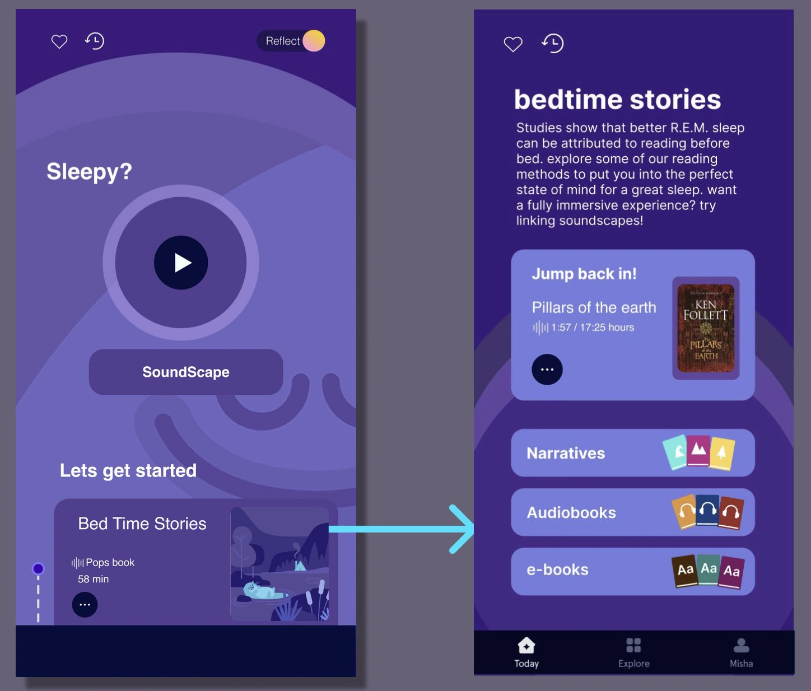
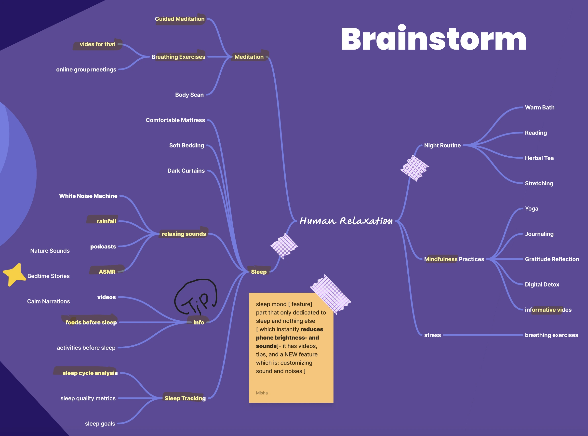
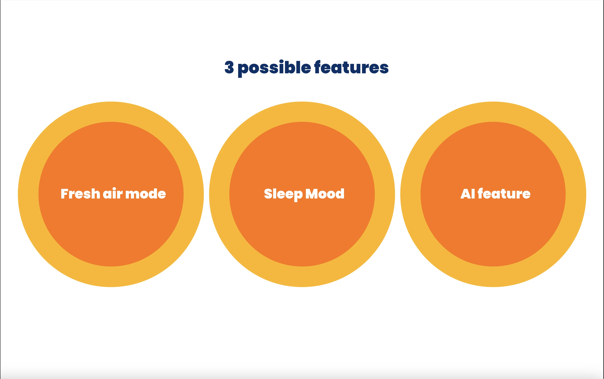
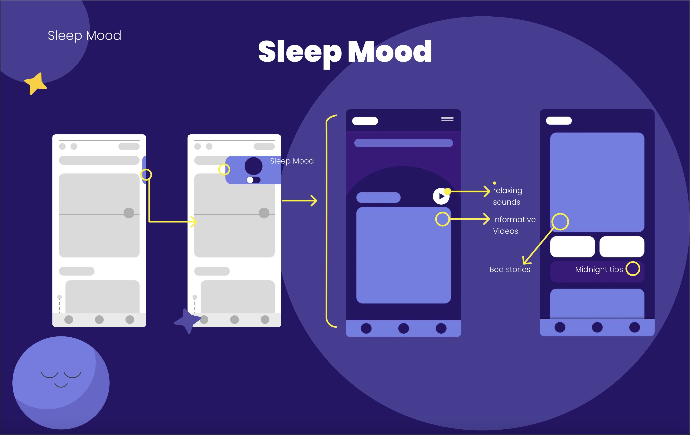
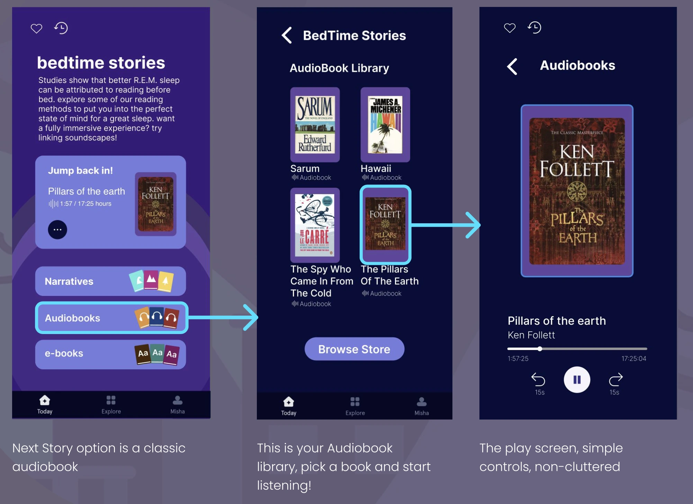

Research & Insights
Three semi-structured interviews revealed: users value simplicity and personalization, many associate good sleep with reduced stress, and they prefer human-guided support over AI-only interactions. Key insight: Sleep is a pivotal but under-served dimension of mental wellness that could increase both perceived effectiveness and daily engagement.
"If I can't sleep I'll usually like read or write in a journal or something. That kind of helps."

Ideation & Architecture
We brainstormed three concepts: Sleep Mood, Fresh Air Mode, and AI Mindfulness Guide. Affinity mapping prioritized Sleep Mood for universal relevance. Core components: customizable soundscapes, narrated bedtime stories, science-backed sleep videos, and progress tracking. Sleep Mood automatically softens the UI (reduced brightness, cooler tones) to signal mental transition into rest.

Design Evolution
Wireframes refined the Sleep Mood activation flow, simplifying redundant navigation into a single toggle. Visual hierarchy emphasized calm immersion over information density. Accessibility priorities: large tap targets, high-contrast typography for night-time readability, and consistency with Headspace's brand identity.

Final Concept
Sleep Mood transforms Headspace into a serene night-time companion. Key features: calm interface shift, multi-sensory engagement (soundscapes, stories, videos), gentle progress prompts, and emotional framing through the persona "Emma Taylor," a marketing professional with irregular work hours.

Outcome & Takeaways
The concept ended at the design phase (no prototype testing). Peer feedback validated sleep as a strategic expansion for retention. Learnings: user empathy improves ideation, collaborative research deepens understanding, and speculative features benefit from human-centered storytelling. Future work: lo-fi prototyping and usability testing.